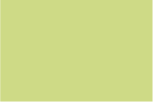

Kleur
Kleur is een belangrijk onderdeel binnen de huisstijl van vzw De Sterre. Om de liefde voor de natuur over te brengen werken we met groene tinten.
Primaire kleuren


Secundaire kleuren

Kleur is een belangrijk onderdeel binnen de huisstijl van vzw De Sterre. Om de liefde voor de natuur over te brengen werken we met groene tinten.